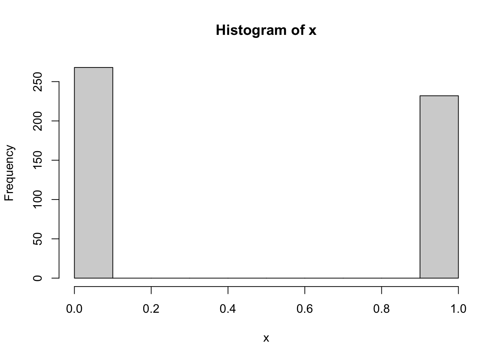
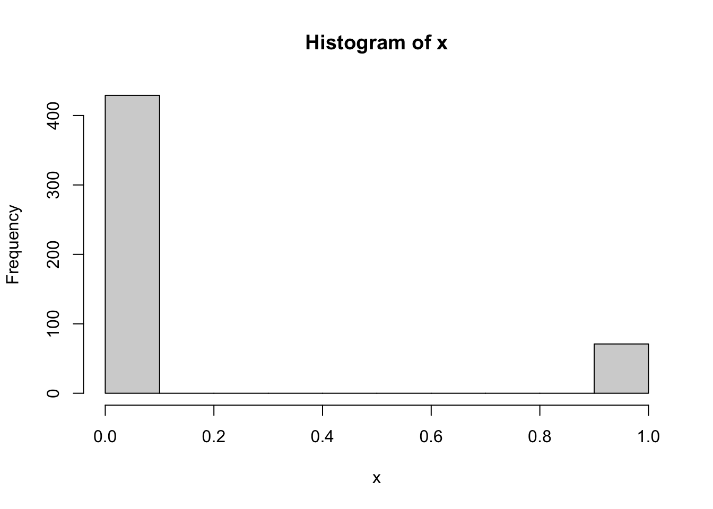
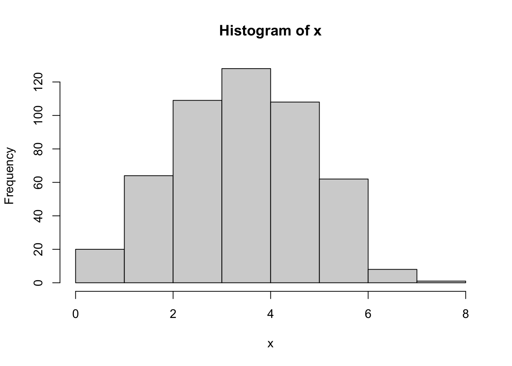
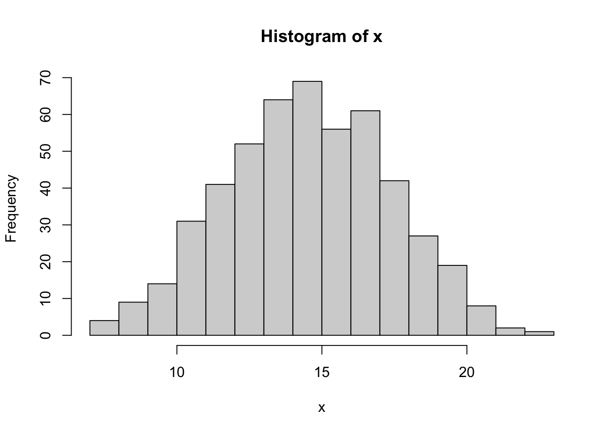
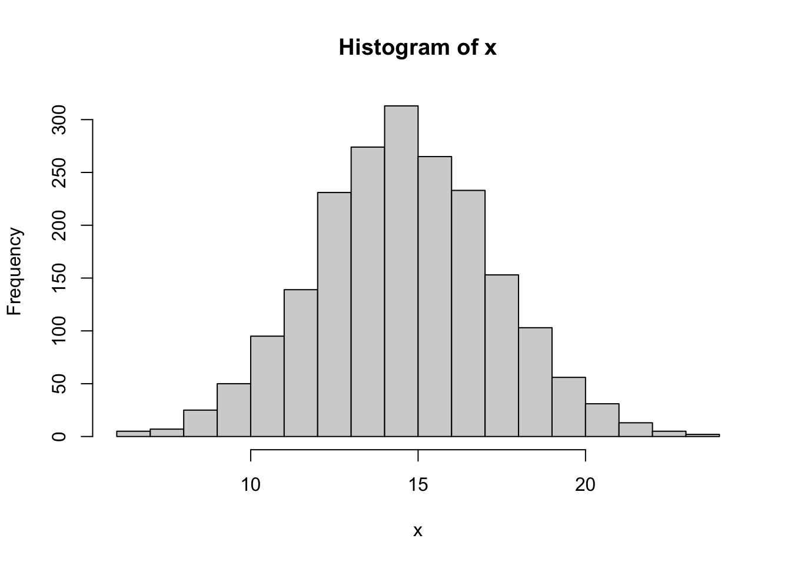
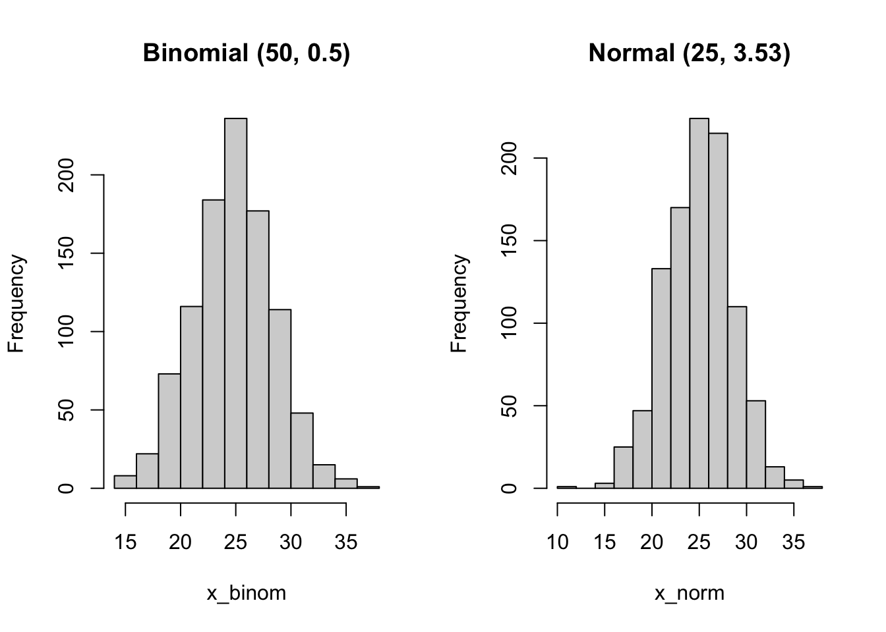

sample(1:6, size = 2, replace = T)[1] 3 2# set replacement False
sample(1:3, size = 3, replace = F)[1] 3 1 2sample(1:3, size = 3, replace = T) # replacement is allowed[1] 2 3 2sample(1:6, size = 2, replace = T)[1] 3 2# set replacement False
sample(1:3, size = 3, replace = F)[1] 3 1 2sample(1:3, size = 3, replace = T) # replacement is allowed[1] 2 3 2# if set seed, the result is the same
# you need to run the line set.seed(yourseed) right before
set.seed(1)
sample(1:6, size = 2, replace = T)[1] 1 4# for this simulation, we do not need to set seed
# because the reproducibility is not too important for the demo
x <- rbinom(n = 500, size = 1, prob = 0.5)
hist(x)
# test different prob
x <- rbinom(n = 500, size = 1, prob = 0.15)
hist(x)
# test out different size
x <- rbinom(n = 500, size = 8, prob = 0.5)
hist(x)
# increase n and p (size and prob)
x <- rbinom(n = 500, size = 30, prob = 0.5)
hist(x, breaks = 20)
# more data points
x <- rbinom(n = 2000, size = 30, prob = 0.5)
hist(x, breaks = 20)
# two parameters: mean and sd
x <- rnorm(1000, mean = 0, sd = 1)
hist(x)
x <- rnorm(1000, mean = 10, sd = 2)
hist(x)
# check the summary
summary(x) Min. 1st Qu. Median Mean 3rd Qu. Max.
3.584 8.637 10.028 10.030 11.445 16.129 # mean
mean(x)[1] 10.0297# variance and sd
var(x)[1] 4.31841sd(x)[1] 2.078078# (sd(x))^2 # these two are equivalent# can plot the mean on the histogram to indicate the center
hist(x)
# v means verticle line, lwd means line width
abline(v = mean(x), col = 'red', lwd = 2)
# quantiles and probability
p1 <- pnorm(1.96, mean = 0, sd = 1)
p2 <- pnorm(-1.96, mean = 0, sd = 1)
1-p1 # equal to p2[1] 0.0249979dd <- data.frame(prob = c(0.03, 0.14, 0.13, 0.38, 0.33),
n = c(3,16,15,44,38))
rownames(dd) <- c('0-17', '18-24', '25-34', '35-64', '65+')
# we can plot two graphs side by side
# set parameter: 1 row 2 columns
par(mfrow = c(1, 2))
# bar plot for counts
barplot(dd$n, names.arg = rownames(dd),
main = 'Number of killed for road accidents')
# bar plot for probability
barplot(dd$prob, names.arg = rownames(dd),
main = 'Proportion for killed road accidents')
# load birth data first
# if you forgot, check notes from day 2 (descriptive stat)
birth <- read.csv('data/birth.csv', sep =',')
head(birth) # print 6 rows id low age lwt eth smk ptl ht ui fvt ttv bwt
1 4 bwt <= 2500 28 120 other smoker 1 no yes 0 0 709
2 10 bwt <= 2500 29 130 white nonsmoker 0 no yes 2 0 1021
3 11 bwt <= 2500 34 187 black smoker 0 yes no 0 0 1135
4 13 bwt <= 2500 25 105 other nonsmoker 1 yes no 0 0 1330
5 15 bwt <= 2500 25 85 other nonsmoker 0 no yes 0 4 1474
6 16 bwt <= 2500 27 150 other nonsmoker 0 no no 0 5 1588# we use the variable bwt
birth_weight <- birth$bwt
hist(birth_weight)
# first find how many are above 400 (counting)
birth_weight>4000 [1] FALSE FALSE FALSE FALSE FALSE FALSE FALSE FALSE FALSE FALSE FALSE FALSE
[13] FALSE FALSE FALSE FALSE FALSE FALSE FALSE FALSE FALSE FALSE FALSE FALSE
[25] FALSE FALSE FALSE FALSE FALSE FALSE FALSE FALSE FALSE FALSE FALSE FALSE
[37] FALSE FALSE FALSE FALSE FALSE FALSE FALSE FALSE FALSE FALSE FALSE FALSE
[49] FALSE FALSE FALSE FALSE FALSE FALSE FALSE FALSE FALSE FALSE FALSE FALSE
[61] FALSE FALSE FALSE FALSE FALSE FALSE FALSE FALSE FALSE FALSE FALSE FALSE
[73] FALSE FALSE FALSE FALSE FALSE FALSE FALSE FALSE FALSE FALSE FALSE FALSE
[85] FALSE FALSE FALSE FALSE FALSE FALSE FALSE FALSE FALSE FALSE FALSE FALSE
[97] FALSE FALSE FALSE FALSE FALSE FALSE FALSE FALSE FALSE FALSE FALSE FALSE
[109] FALSE FALSE FALSE FALSE FALSE FALSE FALSE FALSE FALSE FALSE FALSE FALSE
[121] FALSE FALSE FALSE FALSE FALSE FALSE FALSE FALSE FALSE FALSE FALSE FALSE
[133] FALSE FALSE FALSE FALSE FALSE FALSE FALSE FALSE FALSE FALSE FALSE FALSE
[145] FALSE FALSE FALSE FALSE FALSE FALSE FALSE FALSE FALSE FALSE FALSE FALSE
[157] FALSE FALSE FALSE FALSE FALSE FALSE FALSE FALSE FALSE FALSE FALSE FALSE
[169] FALSE FALSE FALSE FALSE FALSE FALSE FALSE FALSE FALSE FALSE FALSE FALSE
[181] TRUE TRUE TRUE TRUE TRUE TRUE TRUE TRUE TRUE# we see 9 TRUE
# which finds the indices
# length counts the number of elements
which(birth_weight >4000)[1] 181 182 183 184 185 186 187 188 189length(which(birth_weight >4000)==T)[1] 9# alternatively, since R codes T as 1 and F as 0
# we can use sum() command
sum(birth_weight>4000)[1] 9# probability
9/189[1] 0.04761905# use normal approximation
# first get the parameters mean and sd (or sqrt variance)
m <- mean(birth_weight)
s <- sd(birth_weight)
# s <- sqrt(var(birth_weight))
# probability of birthweight above 4000
# if you want
pnorm(4000, mean = m, sd =s, lower.tail = F)[1] 0.07386235# you can also use the standard normal dist
# whose mean and sd (var) are 0 and 1
# can be translated as a second variable Y above 1.45
# see lecture notes for why this is the case!
pnorm(1.45, lower.tail = F)[1] 0.07352926# the approximation is N(np, npq) if n is large, p close to 0.5
# note: the small n (first argument) is how many random samples you want
# it is different from the 'size' argument in binomial distribution
N <- 50
P <- 0.5
# binom(50, 0.5)
x_binom <- rbinom(n = 1000, size = N, prob = P)
# normal
x_norm <- rnorm(n = 1000, mean = N*P, sd = sqrt(50*0.5*(1-0.5)))
# plot them side by side
# note that sd for normal distribution is approximate
par(mfrow = c(1, 2))
hist(x_binom, main = 'Binomial (50, 0.5)')
hist(x_norm, main = 'Normal (25, 3.53)')
# take summary statistics
summary(x_binom) Min. 1st Qu. Median Mean 3rd Qu. Max.
12 23 25 25 27 35 summary(x_norm) Min. 1st Qu. Median Mean 3rd Qu. Max.
14.70 22.58 24.88 24.91 27.26 34.68 # variance. if want standard deviation, use sd(x)
var(x_binom)[1] 12.41141var(x_norm) [1] 11.83043